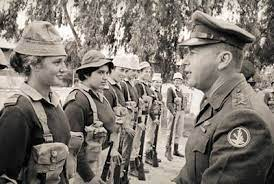
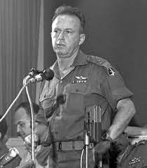
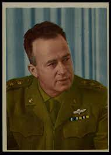

- Yigal Allon, a Palmach commander, recruited Yitzhak Rabin to serve as a fighter in the elite combat force of the Haganah.
- Rabin served in various command and training roles, including leading the strike force that liberated Jewish refugees from the Atlit detention facility.
- He was imprisoned in the Rafah detention camp during the struggle against the British but was later released.
- Rabin commanded the Harel brigade, guarding supply convoys to Jerusalem and participating in the War of Independence.
- He played a key role as second-in-command to General Yigal Allon in Operation Dani, which involved the conquest of Lydda-Ramle.
- Rabin served as the operations officer on the southern front, contributing to major campaigns against Egyptian forces and the liberation of the Negev.
- In August 1948, Rabin married Lea Schlossberg, and they had two children, Dalia and Yuval.
- At the age of forty-one, Rabin became the Chief of General Staff, facing challenges such as the growing military strength of Egypt and Syria, water source disputes, and sponsorship of terrorist activity.
- Rabin called up Israel's reserve forces when Egyptian armor advanced to the Sinai Peninsula and played a pivotal role in directing the battles from IDF headquarters.
- He had a significant moment when he entered the Old City of Jerusalem with Generals Moshe Dayan and Uzi Narkiss.


